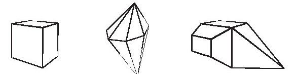
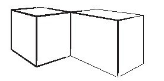
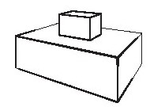
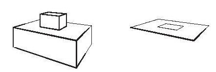
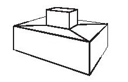
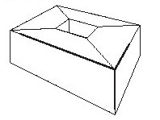
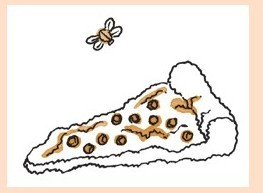
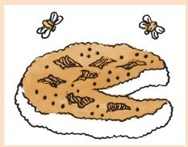
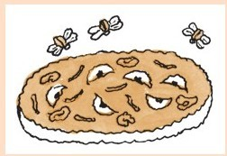

在“自大的厨师”（第二章）中我介绍了我的解题理论。我在那一章里解释了解题要有两种人格，有人充满自信而有人总是自我怀疑。我们在那一章里看到了第一种人格。现在该谈谈第二种了。
但是我先给你讲一个真实的、关于课堂上的自信和谦逊的故事。这是几年前我从一个同事那里听来的。他进行了一次测验，当时班级成绩不是很好，但是他对班上一位女生交的，也是全班最好的试卷印象深刻。他当众对她进行了表扬。当即，两个男生站起来抱怨说测验有错误之处。这位女生，也是聪明的学生，也和他们一样没有弄明白测试的内容。他们说，其实她曾在测试的前一天向他们求教过。她有难处而他们也帮助了她。那为什么她的测验得分比他们的高？
那位女生很尴尬。老师也很为难，难以做出回应。但如果以我的解题理论看，就能清楚地解释。这位女生能谦虚求教，而获得的帮助给了她与谦虚相配的自信。两位男生信心十足，但是在他们与女生的交流过程中没有增加谦虚之感，他们甚至可能已经丢掉了一些！
从自信到不自信的转换并不容易。如果你确定自己是对的——为什么要怀疑自己？当然你可能是粗心造成错误。这个故事里的小伙子一定是犯了几个这样的错误。
但是，我们假设你是对的，即使真的是对的，你仍然需要怀疑！
听起来奇怪吗？我会给你讲两个故事。
有疑心的欧拉
这个故事在哲学家伊姆雷·拉卡托斯（1922～1974）的《证明与反驳》[32]中有详细的描述。我只需要用他所探讨的一个片段就能说明我的观点。
这个故事是关于多面体的。

将多面体想象成一个带有多角形边的立体图形。多面体的表面由多边形（称为“面”）、边（面之间的线段）和顶点组成。
故事是从史上最伟大的数学家之一莱昂哈德·欧拉（1707～1783）的观察开始，任何一个多面体的面数加上顶点数之和是边数加上2。
F+V=E+2
其中F是面数，V是顶点数，而E是边数。举例来说，立方体有6面、8个顶点和12条边。
6+8=12+2
欧拉公式的证明也被提了出来，但是几年内就有数学家开始怀疑。他们发现有些例子就不适用这个公式。

在这个例子中，从学术上讲是个独立的多面体，有12个面，14个顶点和23条边。
12+14≠23+2
这个问题通过限制公式图形解决了，边是指正好两个面形成的边。但是这里还有另一个例子。

现在它有11个面、16个顶点和24条边。
11+16≠24+2
问题在于有一面有个“洞”。

这个问题通过要求面没有洞解决。如果上图有洞的面拆换了

那么这个公式就对了。
14+16=28+2
很好！但是，有这样一个例子。

面没有洞，但是多面体有一个洞，因此有16面、16个顶点和32条边！
16+16≠32+2
这样的例子再三出现。每一次，这个定理的陈述都会被修改得更精确。中间总会有一个真实正确的定理。
从欧拉首次提出该定理到最终形成有证明的、严谨的定理几乎用了50年。对此更完整的探讨无法在这本书完成[33]。
猜不透的比萨
多年以来，最让我变得谦虚的工作是做比萨。我从零开始。我的第一个比萨饼皮是用发酵粉做的生面团（没有酵母）。做得太差以至于谦虚战胜了自信。我再次尝试是两年之后的事了。
当我开始烤面包时，我重新为比萨而奋斗。我很快决定用做面包的生面团做比萨。但是我仍然面临着饼皮难关。我尽可能尝试，但做出的饼皮总是很软。我们有一个电烤箱加热缓慢，并且加热的热度似乎从来不足或者不够干燥。经历了无数次尝试，我偶然发现以下这个办法：首先，我将比萨放到冷的烤箱中，这样用于烹饪的热量自下而上集中在饼皮上。其次，当底部的饼皮熟了，我将比萨移出烤盘放到烤箱架上几分钟，使饼皮彻底变硬，烤成棕色。一直到1982年，我有了一个煤气炉。我那时已经研究了10年如何烤好比萨。
现在的问题是饼上的配料。我试过的每一样东西似乎都会变湿——除了意大利辣香肠。我做的饼皮底部发脆，但是上面像糊着烂泥。
蘑菇就是一个特别大的难题。我痛恨罐装蘑菇这个创意，即使我是从比萨店买的。但是新鲜的蘑菇在加热烹饪时会留下水坑。最后我无意中发现把蘑菇先做熟是可行的方法[34]。其他蔬菜也会渗漏出水。我花了好几年才意识到我可以将胡椒切得更碎，少量堆放。
到了20世纪80年代末，我做出了像样的成品。我能发挥稳定做出比萨，甚至可以开公司出售了。自信战胜了谦虚。我做的比萨很好，我也成功研发出了比萨配料搭配。我确定我那时是自信的。我不再追求进步。
但是2002年发生的一件事情引起了我的注意。我的比萨非常棒（我是这么想的）。我做的饼皮受到赞扬（这是事实）。但是我的客人从没有吃完我做的比萨。他们总会将饼皮的边缘剩下不吃。最终，我有所怀疑了。
怀疑使我想确认是否我用了太多生面团。问问题的同时我更加谦虚。用一大块生面团我就可以有所炫耀了，我能像专业人士那样拉伸、转动、上下抛掷生面团，而用小块的面，我只能用擀面杖擀开。但是结果却有极大的提升。
比萨制作基本方法（16英寸）
份食谱所说的生面团（该食谱见第二章）
3汤匙番茄糊（不是番茄酱）
½茶匙牛至
110克马苏里拉奶酪
你喜欢的比萨配料，但不要太多
2汤匙新鲜磨碎的帕玛森乳酪
用黄油将烤盘润滑[35]。擀开生面团。这并不容易。我将生面团擀成直径13～14英寸大小，再迅速拍在烤盘中，然后慢慢地将其拉伸至烤盘边缘。
生面皮表面点上一些番茄糊，撒上牛至。上面加上马苏里拉奶酪和你喜欢的比萨配料，撒上帕玛森乳酪。
以230摄氏度烘焙15～20分钟。不时检查一下。最后，我把它从烤盘中移出，再在烤箱架上烤1～2分钟。
所有常见的食材都可以用作配料：
·意大利辣香肠——切得薄一些这样烤出来比较脆
·蘑菇——需要提前烹饪
·洋葱——这个也需要提前烹饪，做成焦糖色
·胡椒、橄榄、浸泡在卤汁中的洋蓟心、做熟的火腿汉堡等。
圣女果比萨

1杯左右圣女果
½茶匙切碎的迷迭香
80克优质切达干酪
可选项：¼杯胡桃
橄榄油
盐
将圣女果切开，放在比萨饼皮上。撒上迷迭香和切达干酪。这里说的“优质”切达干酪是指有很多种滋味，不一定要有非常强烈味道的干酪。佛蒙特州或者纽约州的干酪就很好。还可以撒上山核桃碎粒。
淋一点橄榄油，按个人口味加盐。烤制。
茴香比萨
1个中等大小的洋葱，切得非常细
1杯细细切好的茴香头
3汤匙黄油或者更多
¼～杯黄金葡萄干，切碎
1汤匙苹果醋
可选项：切碎的，煨过的榛子
盐
慢火用黄油炒洋葱和茴香，直到蔬菜变干，成焦糖色。加入葡萄干和醋，再略加烹炒，然后将它们一起铺散在比萨饼皮上。如果有，撒上榛子。
按个人口味加盐，然后烤制。
鲁宾比萨

俄式调味酱
德国泡菜
咸牛肉切片
新鲜研磨的葛缕子籽
如果可以，在生面团中加一点黑麦粉
在比萨饼皮上涂上俄式调味酱，就像涂番茄酱那样。上面加上德国泡菜、咸牛肉、瑞士硬干酪，再加上葛缕子籽粉。
烤制。
压轴的这个比萨通常最受好评。
苹果比萨

苹果，去皮去核、切片。
一小撮肉豆蔻或者肉豆蔻干皮
优质切达干酪
核桃（必需的）
1～2茶匙糖
1～2汤匙黄油
将苹果片铺在饼皮上。撒上肉豆蔻或者肉豆蔻干皮。放上干酪、核桃，撒上糖。
点上一些黄油。
烤制。
这里我想让你知道，你们必须一直关心自己的产品/想法/菜/定理是否还能有所进步和提升。可能你已经知道了。可能你比我这个需要时刻被提醒不要太自鸣得意的作者还要明白这一点。